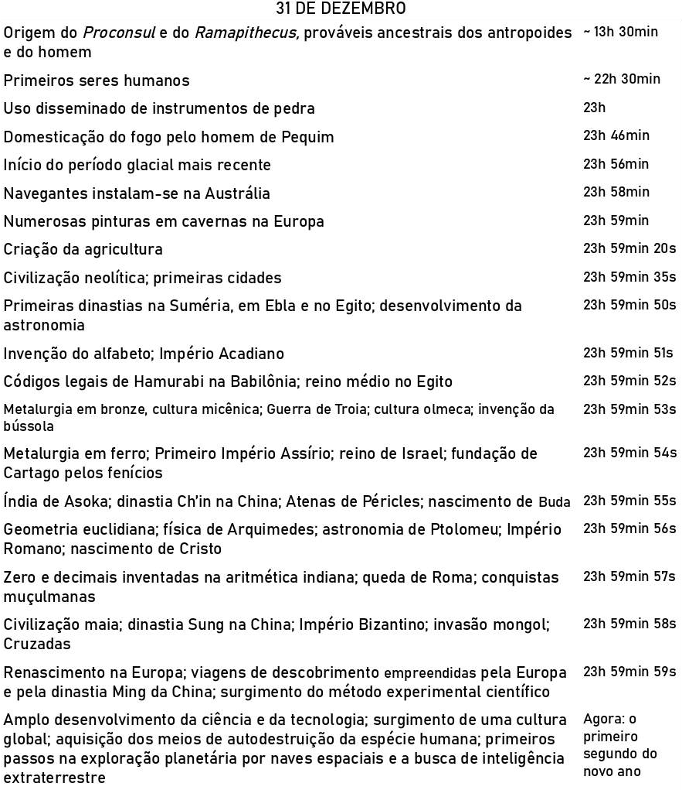
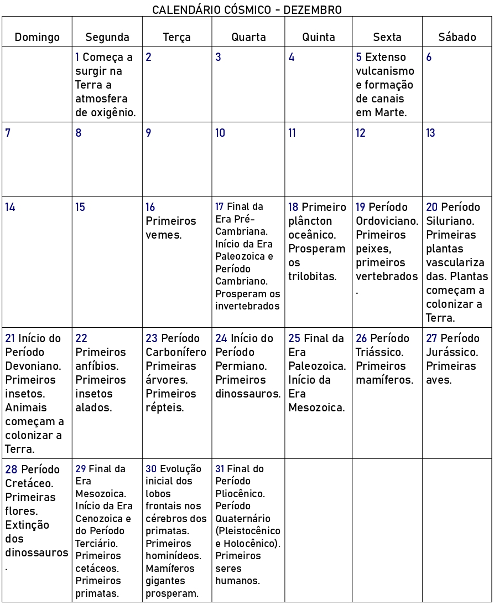

O mundo é muito velho e os seres humanos, muito recentes. Os acontecimentos importantes em nossas vidas pessoais são medidos em anos ou em unidades ainda menores; nossa vida, em décadas; nossa genealogia familiar, em séculos; e toda a história registrada, em milênios. Contudo, fomos precedidos por uma apavorante perspectiva do tempo, estendendo-se a partir de períodos incrivelmente longos do passado, a respeito dos quais pouco sabemos tanto por não existirem registros quanto pela real dificuldade de concebermos a imensidade dos intervalos compreendidos.
Mesmo assim, somos capazes de localizar no tempo os acontecimentos do passado remoto. A estratificação geológica e a marcação radiativa proporcionam informação quanto aos eventos arqueológicos, paleontológicos e geológicos; a teoria astrofísica fornece dados a respeito das idades das superfícies planetárias, das estrelas e da galáxia da Via Láctea, assim como uma estimativa do tempo transcorrido desde a Grande Explosão ("Big Bang") que envolveu toda a matéria e a energia do universo atual. Essa explosão pode representar o início do universo ou pode constituir uma descontinuidade na qual a informação da história primitiva do universo foi destruída. Esse é certamente o acontecimento mais remoto do qual temos qualquer registro.
O modo mais didático que conheço para expressar essa cronologia cósmica é imaginar a vida de 15 bilhões de anos do universo (ou pelo menos sua forma atual desde a Grande Explosão) condensada em um ano. Em vista disso, cada bilhão de anos da história da Terra corresponderia a mais ou menos 24 dias de nosso ano cósmico, e 1 segundo daquele ano a 475 revoluções reais da Terra ao redor do Sol. Nas páginas seguintes, apresento a cronologia cósmica em três formas: uma lista de alguns períodos representativos anteriores a dezembro, um calendário do mês de dezembro e uma visão mais pormenorizada do final da noite do último dia do ano. Nessa escala, os acontecimentos de nossos livros de história — mesmo aqueles que fazem razoável esforço para desprovincializar o presente — são tão compridos que se torna necessário fazer uma recontagem, segundo a segundo, dos últimos segundos do ano cósmico. Mesmo então, encontramos exemplos classificados como contemporâneos que aprendemos a considerar como amplamente separados no tempo. Na história da vida, uma tapeçaria igualmente rica deve ter sido tecida em outros períodos — por exemplo, entre 10h 02min e 10h 03min na manhã do dia 6 de abril ou 16 de setembro ou qualquer outro dia. Contudo, só dispomos de registros pormenorizados dos últimos momentos do ano cósmico.
A cronologia corresponde aos melhores indícios atualmente disponíveis. No entanto, esta é bastante duvidosa. Ninguém se espantaria se, por exemplo, fosse descoberto que as plantas colonizaram a Terra no Período Ordoviciano em vez de fazê-lo no Periodo Siluriano; ou que os vermes segmentados apareceram mais cedo no Período Pré-Cambriano do que é indicado. Além disso, na cronologia dos dez últimos segundos do ano cósmico, foi-me evidentemente impossível incluir todos os acontecimentos importantes: espero ser perdoado por não ter mencionado explicitamente os progressos na arte, na música e na literatura ou as revoluções americana, francesa, russa e chinesa, importantes do ponto de vista histórico.
| Grande Explosão (Big Bang) | 1º de janeiro |
| Origem da Via Láctea | 1º de maio |
| Origem do sistema solar | 9 de setembro |
| Formação da Terra | 14 de setembro |
| Origem da vida na Terra | 25 de setembro |
| Fósseis mais antigos (bactérias e algas verde-azuladas) | 9 de outubro |
| Surgimento do sexo (microrganismos) | 1º de novembro |
| Formação das rochas mais antigas conhecidas | 2 de novembro |
| Plantas fotossintéticas fósseis mais antigas | 12 de novembro |
| Eucariotas (primeiras células com núcleo) | 15 de novembro |
A construção de quadros e calendários desse tipo é inevitavelmente humilhante. É desconcertante que, em tal ano cósmico, a Terra não se tenha condensado a partir da matéria interestelar antes do início de setembro; que os dinossauros tenham surgido na noite de Natal; que as flores tenham emergido no dia 28 de dezembro e os homens e mulheres tenham aparecido às 22h do último dia do ano. Toda a história conhecida ocupa os últimos dez segundos do dia 31 de dezembro; e o tempo compreendido entre o declínio da Idade Média e o presente ocupa pouco mais que um segundo. Mas, em virtude de ter sido feito o arranjo desse modo, o primeiro ano cósmico acabou de findar. E, apesar da insignificância do instante que ocupamos até agora no tempo cósmico, é claro que o destino das coisas na Terra e em suas proximidades dependerá muito do conhecimento científico e da sensibilidade própria da humanidade.
 